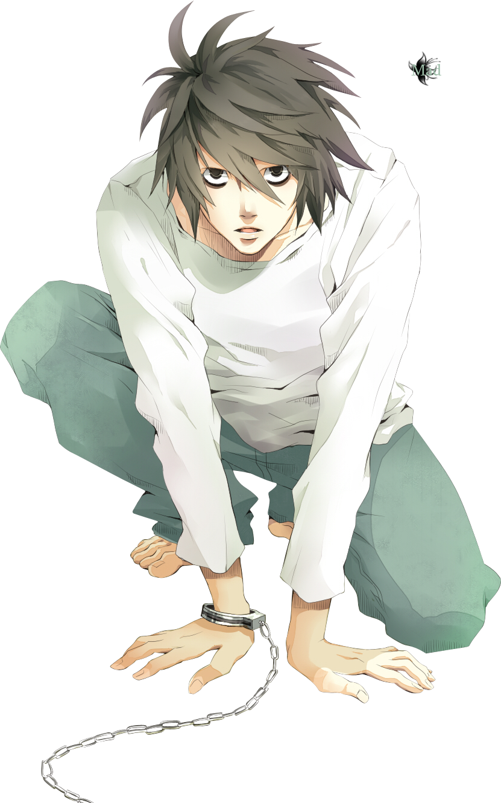

L Lawliet (Japanese: エル・ローライト, Hepburn: Eru Rōraito), known mononymously as L, is a fictional character
in the manga series Death Note, created by Tsugumi Ohba and Takeshi Obata. He is an enigmatic, mysterious, and
highly-esteemed international consulting detective whose true identity and background is kept a secret.
L is a very slim, pale, tall young man with messy neck-length black hair and black eyes. One of his most noticeable
features is the shadow below each of his eyes, a result of him being an insomniac. L is always shown to be wearing a
pair of blue jeans and a long-sleeved white shirt. He almost never wears shoes or socks, preferring to go barefoot, even
while in public. This was shown when he visited Light Yagami's school and was seen barefoot while sitting on a bench, not
bothering to wear his shoes until he got up to walk. L also tends to hunch over when walking.